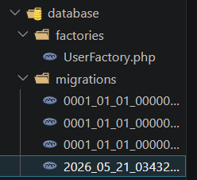
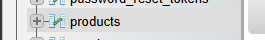
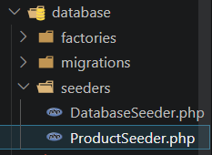
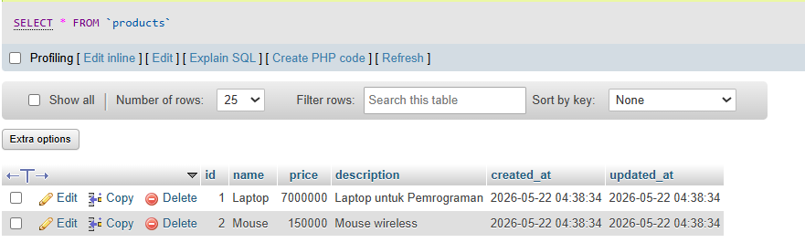
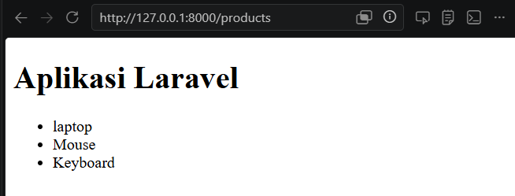

Migration, Seeding, Routing, Model, Controller, View
Dibuat : 27 Mei 2026
Repository GitHubMemahami dan mampu membangun aplikasi web berbasis framework Laravel dengan menerapkan konsep MVC (Model-View-Controller).
Laravel adalah framework PHP open-source yang menggunakan pola arsitektur MVC (Model-View-Controller). Framework ini menyediakan berbagai fitur bawaan yang memudahkan proses pengembangan aplikasi web modern, antara lain:
database/migrations.
database/seeders.
routes/web.php. Laravel mendukung berbagai jenis routing
seperti
routing dasar, routing parameter, named route, route group, hingga resource
route untuk CRUD.
app/Models.
index,
create, store, show,
edit, update, dan destroy. File
controller disimpan di folder app/Http/Controllers.
@extends, @section,
@yield, @foreach, dan @if.
File view disimpan di folder resources/views dengan ekstensi
.blade.php.
1. Konfigurasi Database
Langkah pertama adalah membuat database di phpMyAdmin, kemudian
mengonfigurasi file
.env pada root project Laravel agar terhubung ke database yang sudah
dibuat.
Buka file .env lalu sesuaikan konfigurasi database berikut:
DB_CONNECTION=mysql
DB_HOST=127.0.0.1
DB_PORT=3306
DB_DATABASE=praktikum_laravel
DB_USERNAME=root
DB_PASSWORD=2. Membuat Migration Tabel Product
Jalankan perintah artisan berikut di terminal untuk membuat file migration:
php artisan make:migration create_products_table
File migration akan tersimpan di folder
database/migrations.

Buka file migration yang baru dibuat di
database/migrations/2026.....php,
kemudian tulis isi method up() menjadi seperti berikut:
<?php
use Illuminate\Database\Migrations\Migration;
use Illuminate\Database\Schema\Blueprint;
use Illuminate\Support\Facades\Schema;
return new class extends Migration
{
public function up(): void
{
Schema::create('products', function (Blueprint $table) {
$table->id();
$table->string('name');
$table->integer('price');
$table->text('description');
$table->timestamps();
});
}
/**
* Reverse the migrations.
*/
public function down(): void
{
Schema::dropIfExists('products');
}
};
Selanjutnya jalankan migration dengan perintah:
php artisan migrate
Jika berhasil, tabel products akan muncul di database.

*Note perintah : php artisan migrate:rollback untuk membatalkan
migration dan php artisan migrate:fresh untuk menghapus semua tabel dan
menjalankan ulang
3. Membuat Seeder Data Dummy Product
Seeding digunakan untuk mengisi data awal ke database, berfungsi untuk mengisi tabel dengan data dummy. Jalankan perintah berikut:
php artisan make:seeder ProductSeeder
Jika berhasil, file seeder akan otomatis terbuat di database/seeder.

Buka file tersebut di database/seeders/ProductSeeder.php
dan tulis kode berikut untuk menambahkan data dummy ke dalam database.
<?php
namespace Database\Seeders;
use Illuminate\Database\Seeder;
use Illuminate\Support\Facades\DB;
class ProductSeeder extends Seeder
{
public function run(): void
{
DB::table('products')->insert([
[
'name' => 'Laptop',
'price' => 7000000,
'description' => 'Laptop untuk Pemrograman',
'created_at' => now(),
'updated_at' => now(),
],
[
'name' => 'Mouse',
'price' => 150000,
'description' => 'Mouse wireless',
'created_at' => now(),
'updated_at' => now(),
],
]);
}
}
Daftarkan seeder pada database/seeders/DatabaseSeeder.php:
$this->call(ProductSeeder::class);Jalankan seeder dengan perintah:
php artisan db:seed*Note : atau jalankan migration dan seeding sekaligus:
php artisan migrate:fresh --seed
Data dummy berhasil ditambahkan ke tabel products.

4. Konfigurasi Model
Model digunakan untuk berinteraksi dengan database. Laravel menggunakan Eloquent ORM
untuk mempermudah manipulasi data.
Buat file app/Models/Product.php, lalu
definisikan kolom yang boleh diisi massal melalui properti $fillable:
<?php
namespace App\Models;
use Illuminate\Database\Eloquent\Factories\HasFactory;
use Illuminate\Database\Eloquent\Model;
class Product extends Model
{
use HasFactory;
protected $fillable = [
'name',
'price',
'description'
];
}
Properti $fillable berfungsi untuk melindungi dari mass assignment
vulnerability,
yaitu mencegah kolom-kolom yang tidak diinginkan diisi secara bebas.
5. Membuat Resource Controller
Controller digunakan untuk mengatur logika aplikasi, penghubung
antara: Model (Database) - View (Halaman) - Request User.
Buat file controller menggunakan perintah berikut di terminal:
php artisan make:controller ProductController
Buka file di app/Http/Controllers/ProductController.php dan isi dengan
logika CRUD berikut:
<?php
namespace App\Http\Controllers;
use App\Models\Product;
use App\Http\Controllers\Controller;
class ProductController extends Controller
{
public function index()
{
$products = Product::all();
return view('products', compact('products'));
}
}Resource controller :
php artisan make:controller ProductController --resourceResource Route :
Route::resource('products', ProductController::class);6. Menambahkan Route Resource
Buka file routes/web.php dan tambahkan resource route untuk products:
<?php
use Illuminate\Support\Facades\Route;
use App\Http\Controllers\ProductController;
Route::get('/', function () {
return redirect()->route('web.index');
});
Route::resource('products', ProductController::class);
Satu baris Route::resource secara otomatis mendaftarkan 7 route sekaligus.
Verifikasi route yang terdaftar menggunakan perintah:
7. Menjalankan dan Melihat tampilan halaman
Jalankan server Laravel dengan perintah:
php artisan serve
Buka browser dan akses http://127.0.0.1:8000/products.

Melalui Praktikum 7 kita berhasil mempelajari beberapa hal penting dalam pengembangan aplikasi web menggunakan Laravel, terutama dalam memahami alur kerja:
Dengan memahami alur MVC secara menyeluruh, pengembangan aplikasi web menjadi lebih terstruktur, mudah dipelihara, dan siap dikembangkan ke fitur yang lebih kompleks seperti autentikasi, API, dan middleware.